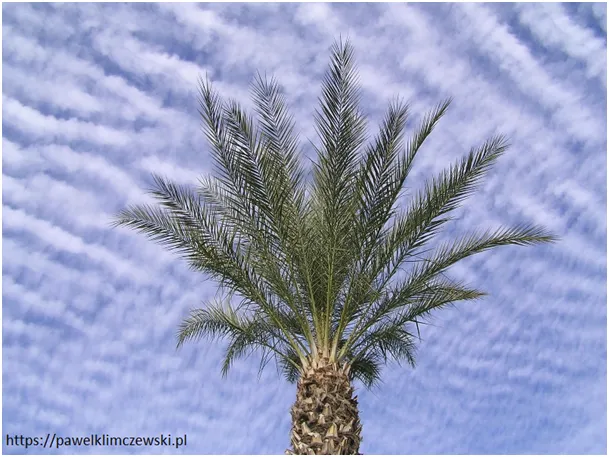
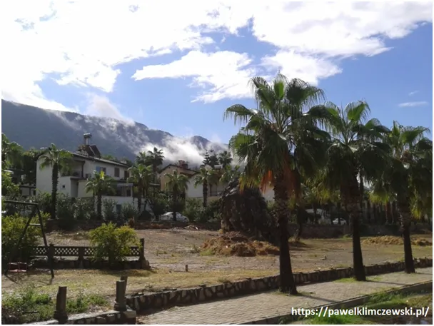
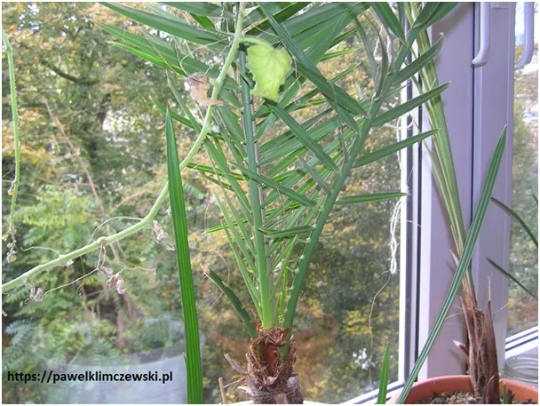

Nieśmiertelna palma
Długo nie rozumiałem symboliki palmy, starożytnego symbolu Izraela, myślę że wielu Żydów do dziś go nie zrozumiała.
Drzewo daje pożywne owoce, ale to nic nadzwyczajnego. Z pestek daktyli nagminnie wyrastają mi palmy w doniczkach. Kiedyś po próbie rozsadzenia drzewa uschło ono na wiór. Na dodatek nie było mnie długo i korzeń nie był podlewany.

Suche, szeleszczące liście straszyły jak kościotrup. Wbrew logice, zamiast wyrzucić chojraka, zacząłem go podlewać i stał się "cud". Nie chodzi o to, że palma "odbiła" i wypuściła nowe liście, to potem. Najpierw w szare suche liście, począwszy od dołu zaczęło napływać nowe życie. Martwe suche struktury zaczęły się wypełniać wilgocią i szybko się zrobiły zielone jak młode drzewko. Kompletnie suche liście w kilka tygodni zrobiły się zielone od korzenia do szczytów.

Gdy wczesną wiosną, w Niedzielę Palmową, na tydzień przed Zmartwychwstaniem, rzucano pod nogi Jezusa palmowe liście, były to martwe palmowe liście zerwane przez zimowe wiatry. O tej porze roku na Bliskim Wschodzie robi się porządki i pali roślinne śmieci strącone z drzew przez zimowe wichury. Wszystkie te zielone liście wyrastające z pnia na drugim zdjęciu pół roku temu były suche jak wiór. Często słyszymy w Ewangelii, że "ziarno musi obumrzeć", aby zakiełkowało. Myślę, że to miał na myśli Roman Zięba w tym opisie: https://www.facebook.com/roman.zieba/posts/pfbid02cGwsMdnbhVnekQ1m2dNT6cTBa8Zomsmouz3aaZ6FyeFF7H2xDuiEDVkojZweDBZ6l
Paweł Klimczewski